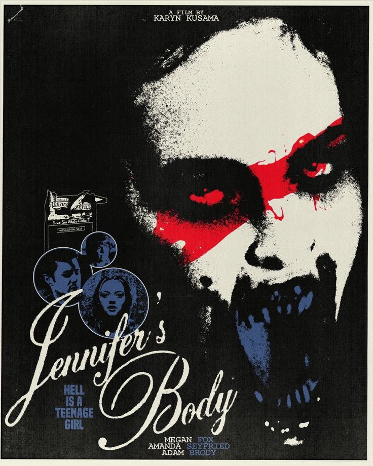
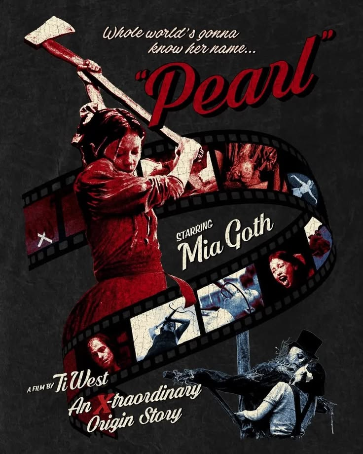
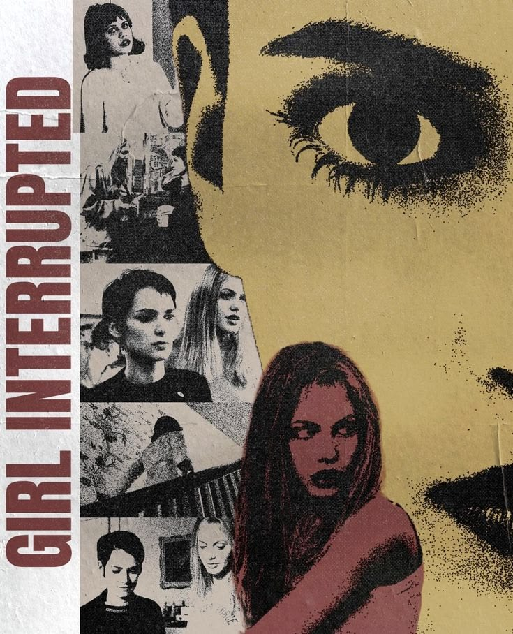

Top 4 Movies

Frankenstien (2025)
Best adaptation, this was a movie Guierrmo Del toro put so much passion it was amazing to watch over and over again. Mia goth and Jacob Elordi are beautiful

Jennifer's Body (2009)
Best cast ever, fun soundtrack and such a good edgy chick flick.

Pearl (2022)
"PLEASE I'M A STARRRRR" Mia goth is an amazing actress and carries the female horror genre

Girl, Interrupted (1999)
I watch this movie whenever I need to feel something, the angst--the confusion. it's all relatable
Upcoming Movies That I'm excited for
Movie of The Week!
Our Hero, Balthazar (2026)
sat in the theatre mouth wide as they questioned society and social rules. It is one of those movies you should watch once in your life.